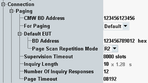

This section describes the parameters of the "Paging" branch of the config tree.
The parameters in this section are not applicable to LE.

The Bluetooth device address used by the R&S CMW when communicating with the EUT.
Remote command:A drop-down list showing all the devices that the R&S CMW found during inquiry plus the default address.
Remote command:Settings of the EUT to connect with if "For Paging" = "Default".
The Bluetooth device address of the default EUT.
Remote command:Sets/gets the page scan repetition mode to be used for the default device.
It does not apply when paging a non-default device, whose page scan repetition mode is acquired during inquiry.
The page scan repetition mode determines the interval between the beginnings of two consecutive page scans while the R&S CMW attempts a connection and synchronization to the EUT.
Remote command:The LMP supervision timeout, i.e. number of "non-communication slots" between R&S CMW and EUT that can occur before the two devices detach from each other. A supervision timeout is set to ensure link control in case that the connection (temporarily) breaks down.
Remote command:Specifies the total duration of the inquiry mode. When this timer elapses (or the maximum "Number of Inquiry Responses" is reached), inquiry is stopped.
Remote command:The maximum number of responses recorded during an inquiry. If the maximum number is reached (or the "Inquiry Length" timer has elapsed), inquiry is stopped.
Remote command:The maximum time the local link manager waits for a baseband page response from the EUT, defined in slots of 625 µs. If the timer expires and the remote device has not responded to the page at baseband level, the connection attempt is considered to have failed.
Remote command: